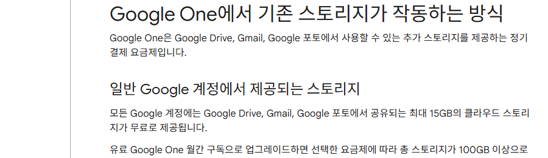
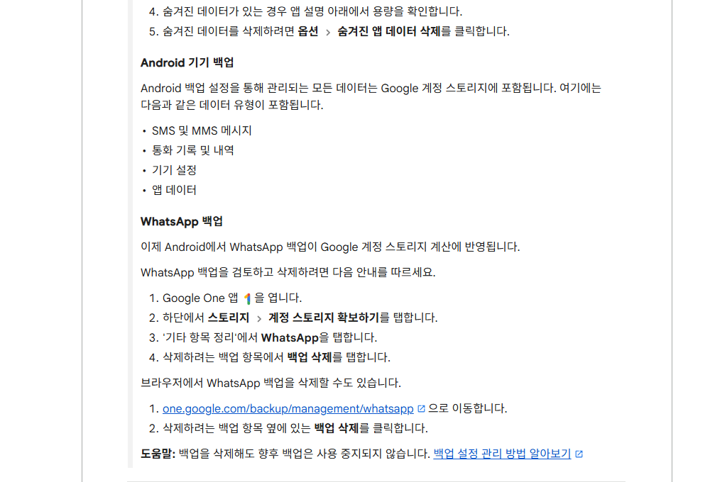
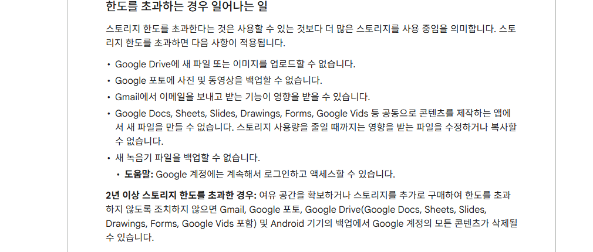

안드로이드 백업이 구글 저장공간을 차지하는 이유 — 확인하고 정리하는 법
구글 드라이브 용량이 갑자기 부족하다는 알림, 최근 처음 받아보신 분들 있으실 거예요. 사진을 더 찍은 것도 아닌데 말이죠. 안드로이드(Android) 기기 백업이 원인일 수 있어요. 2026년 7월부터 백업에 포함되는 데이터 범위가 넓어졌거든요.
구글 원(Google One)은 구글의 저장공간 서비스예요. 지메일(Gmail)·구글 드라이브(Google Drive)·구글 포토(Google Photos)가 함께 쓰는 무료 15GB를 관리해요. 이번에 안드로이드 기기 백업이 이 저장공간과 얽히는 방식이 바뀌었어요.

Google One 고객센터가 안내하는 무료 15GB 저장공간 화면이에요.
이미지 출처: Google One 고객센터 · 네이버 본문엔 받아서 재업로드 권장
안드로이드 백업 정책, 뭐가 바뀌었나요
안드로이드 기기 백업이 다루는 데이터 종류 자체가 늘어났어요. 그만큼 구글 계정 저장공간을 더 차지하게 됐어요.
새로 백업을 시작하는 사용자는 2026년 7월 7일부터 바로 새 기준이 적용돼요. 이미 백업을 쓰던 사용자는 조금 달라요. 구글이 이메일로 개별 통지를 보내고, 통지를 받은 날부터 45일의 유예 기간을 둬요. 이 통지는 전체 사용자에게 한꺼번에 나가지 않아요. 앞으로 몇 달에 걸쳐 순서대로 발송되는 중이에요(2026.07.27 기준).
구글 원 고객센터는 이렇게 안내해요.
"Android 백업 설정을 통해 관리되는 모든 데이터는 Google 계정 스토리지에 포함됩니다." (구글 원 고객센터, 2026.07.27 확인)
이번에 새로 포함된 백업 항목
이번 변경으로 백업에 새로 포함되는 항목이 네 가지 늘었어요. 참고로 왓츠앱(WhatsApp) 백업은 이번 변경과 무관하게 몇 년 전부터 이미 포함되고 있었어요.
| 항목 | 예전 | 지금 |
|---|---|---|
| 사진·동영상(구글 포토 백업분) | 포함 | 포함 |
| MMS(멀티미디어 문자) | 포함 | 포함 |
| SMS(문자) | 미포함 | 포함 |
| 통화 기록 | 미포함 | 포함 |
| 기기 설정 | 미포함 | 포함 |
| 앱 데이터 | 미포함 | 포함 |
예전에는 사진·동영상(구글 포토 백업분)과 MMS(사진·동영상 첨부분만 해당)만 포함됐어요. 표 아래 네 줄이 새로 늘어난 부분이에요(2026.07.27 확인). 왓츠앱 백업은 이 표와 무관하게 2024년 무렵부터 이미 포함되고 있었어요(이번 변경 대상 아님).

SMS·통화 기록·기기 설정·앱 데이터가 새로 포함된 내용과, 왓츠앱 백업 관련 안내가 공식 문서에 함께 나와 있어요.
이미지 출처: Google One 고객센터 · 네이버 본문엔 받아서 재업로드 권장
구글은 이번 변화로 평균 약 40MB 정도만 늘어날 거라고 밝혔어요. 이 수치는 구글 대변인 발언을 인용한 외신 보도 기준이에요. 구글 한국 공식 채널에서는 확인되지 않았어요.(Engadget·9to5Google 등, 2026.07.24 확인)
기존부터 포함되던 항목 — 헷갈리지 마세요
무료 15GB는 원래도 구글 드라이브·지메일·구글 포토가 나눠 써요.
- 구글 드라이브
- PDF·이미지·동영상 같은 대부분의 파일
- 휴지통에 있는 항목
- 2021년 6월 1일 이후 새로 만들거나 수정한 구글 문서(닥스·시트·슬라이드 등)
- 지메일: 메일과 첨부파일(스팸함·휴지통에 있는 것 포함)
- 구글 포토
- 원본 화질로 백업한 사진·동영상은 항상 포함
- 2021년 6월 1일 이후엔 고화질('저장용량 절약' 화질)·일반 화질도 포함
- 단, 그 이전에 백업한 사진·동영상은 미포함
- 공유 폴더 파일은 원본 소유자 용량에서만 차감돼요(받은 사람 용량은 안 써요)
무료 15GB 넘으면 어떻게 되나요
저장공간을 넘기면 새 파일 업로드나 백업이 막히고, 지메일 송수신에도 영향이 가요.
- 구글 드라이브에 새 파일·이미지 업로드 불가
- 구글 포토 사진·동영상 백업 불가
- 지메일 송수신 영향(받는 메일이 발신자에게 반송될 수 있음)
- 구글 문서(닥스·시트·슬라이드 등) 신규 생성 불가, 용량을 줄이기 전까지는 기존 파일 수정·복사도 불가
- 새 녹음기 파일을 백업할 수 없음

2년 이상 초과 상태가 이어지면 콘텐츠가 삭제될 수 있다는 안내가 공식 문서에 그대로 적혀 있어요.
이미지 출처: Google One 고객센터 · 네이버 본문엔 받아서 재업로드 권장
- 2년 이상 저장공간 초과 상태가 이어지면 콘텐츠가 삭제될 수 있어요. 지메일·구글 포토·구글 드라이브·안드로이드 기기 백업이 전부 대상이에요.
- 단 삭제되기 최소 3개월 전에 이메일이나 알림으로 먼저 알려줘요. 그 사이 저장공간을 늘리거나 파일을 지우면 삭제를 막을 수 있어요(2026.07.27 확인).
내 백업이 얼마나 차지하는지 확인하는 법
구글 원 앱이나 one.google.com에서 스토리지 관리자를 열면 서비스별 사용량을 볼 수 있어요.
- 구글 원 앱을 열거나 브라우저에서 one.google.com에 접속합니다.
- '스토리지' 또는 '여유 공간 확보'를 탭해 스토리지 관리자를 엽니다.
- 지메일·구글 드라이브·구글 포토·기기 백업 등 서비스별 사용량 세부정보를 확인합니다.
안드로이드 기기에서는 설정 → Google → 모든 서비스 → 백업 및 복원 → 백업 경로에서도 지금 백업되는 항목을 볼 수 있어요(삼성 기기는 설정 → 계정 및 백업 경로로 다를 수 있어요). 정확한 메뉴 이름은 기기·소프트웨어 버전마다 달라요. 화면에 뜨는 안내를 따라가시면 돼요.
여기서 하나 짚을 게 있어요. '정리 타겟'은 저장공간을 실제로 초과했을 때만 나타나는 기능이에요. 아직 넘지 않았다면 안 뜨는 게 정상이라 당황하지 않으셔도 돼요.
저장공간 정리하는 법
스토리지 관리자에서 서비스별로 파일을 골라 지우면 저장공간을 다시 확보할 수 있어요.
- 스토리지 관리자에서 구글 포토·구글 드라이브·지메일 휴지통 등 서비스를 선택합니다.
- 용량을 많이 차지하는 파일부터 살펴보고 필요 없는 항목을 고릅니다.
- 삭제를 눌러 저장공간을 확보합니다.
참고로 왓츠앱 백업은 이번 정책 변경과는 별개로 저장공간을 차지해요. 따로 지우고 싶다면 절차가 조금 달라요.
- 구글 원 앱을 열고 하단의 '스토리지' 탭을 탭합니다.
- '계정 스토리지 확보하기'를 탭합니다.
- '기타 항목 정리'에서 WhatsApp을 탭합니다.
- 삭제하려는 백업 항목에서 '백업 삭제'를 탭합니다.
브라우저에서는 one.google.com/backup/management/whatsapp으로 바로 이동해 삭제할 수도 있어요.
- 구글 포토에서 지운 항목은 휴지통에 60일 동안 남아 있다가 완전히 삭제돼요. 그 사이엔 복원할 수 있어요.
- 반면 스토리지 관리자로 구글 드라이브·지메일 항목을 지우면 얘기가 달라요. 휴지통을 거치지 않고 바로 영구 삭제되며 복구할 수 없어요. 지우기 전에 한 번 더 확인하시는 게 좋아요.
자주 묻는 질문
Q. 저장공간이 다 차면 로그인도 안 되나요?
아니요. 계정 로그인과 접속은 계속할 수 있어요. 새 파일을 올리거나 백업하는 것처럼 저장공간을 새로 쓰는 동작만 막혀요.
Q. 왓츠앱 백업을 지우면 앞으로 백업이 아예 안 되나요?
아니요. 백업을 삭제해도 이후 백업이 중지되지는 않아요. 다음 백업 시점이 되면 새로 만들어져요.
참고한 곳
· Google One 고객센터 — Google One에서 기존 스토리지가 작동하는 방식
· Google One 고객센터 — Google 스토리지 작동 방식
· Android 고객센터 — Android 기기에서 데이터 백업 또는 복원
· Google 포토 고객센터 — 사진 및 동영상 삭제하기
✔ 같이 보면 좋아요
· 갤럭시 스마트 스위치로 데이터 옮기는 법 — 기기변경 시 사진·연락처 이전 방법
기기를 바꾸는 중이시라면 이 글도 참고해 보세요.
하루 정리
· 안드로이드 백업에 포함되는 항목이 넓어지면서(SMS·통화기록·기기설정·앱데이터), 구글 계정 저장공간(무료 15GB)을 더 쓰게 됐어요.
· 신규 사용자는 2026년 7월 7일부터, 기존 사용자는 개별 통지 후 45일 유예를 두고 몇 달에 걸쳐 순차 적용 중이에요.
· 구글은 평균 40MB 정도만 늘어날 거라고 밝혔어요(외신 보도 기준).
· 이미 15GB에 가깝다면 구글 원 스토리지 관리자에서 한 번 확인해 보시는 게 좋아요.
평소엔 크게 신경 안 써도 되는 변화지만, 용량 경고 알림을 받으셨다면 이번 기회에 한 번 들여다보세요.